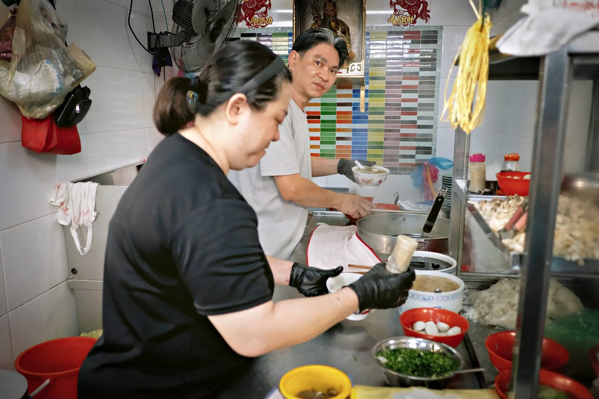
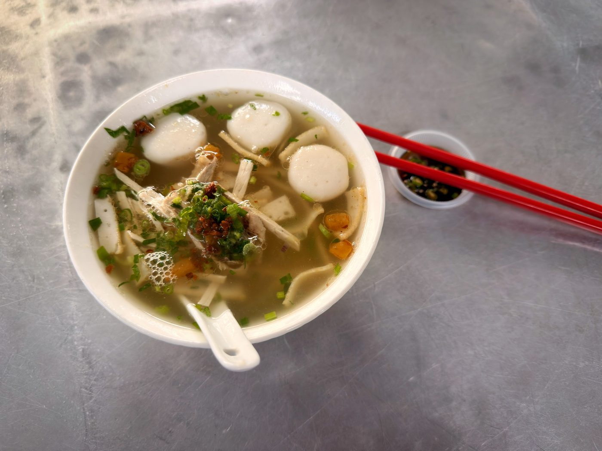
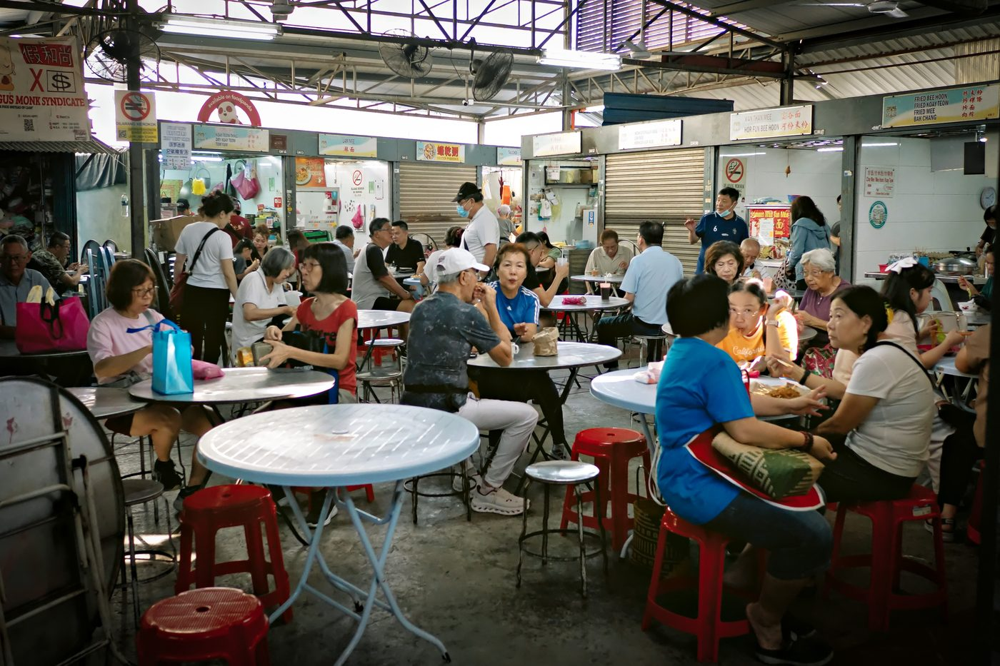

Field guide

Field note · Pulau Tikus · 11 Aug 2026
Ah Liang Koay Teow Th’ng at Pulau Tikus Hidden Food Court
Tuesday breakfast tucked behind Pulau Tikus Wet Market — clear Ah Liang koay teow th’ng, springy fish balls, and morning light in the Hidden Food Court.
I have tried, of course, koay teow flat noodles in various dishes, but today I am very excited to explore the Hidden Food Court, tucked away at the back of the Pulau Tikus Wet Market. Hidden market within the market — it’s like a dream within a dream. While I wait for my koay teow soup, I request a briefing on the dish from my AI research assistant, C-Mee-PO.
C-Mee-PO briefs the bowl
C-Mee-PO: A Hidden Market! How intriguing — and a very appropriate selection with your flat noodles.
Ah Liang Koay Teow Th’ng (also written Ah Liang Koay Teow Soup / Thng) is a well-regarded neighbourhood favourite at the back of Pulau Tikus Wet Market, serving classic Penang-style flat rice noodle soup in a clear, fragrant broth that locals rank among the more comforting breakfast bowls on the island.
What it is
A soup-style koay teow th’ng — flat rice noodles in a light, savoury clear broth rather than a dry or stir-fried preparation. The defining trait here is the clean, flavourful broth paired with especially good fish balls; some regulars order the balls on their own.
Typical ingredients & toppings
- Noodles — silky flat rice noodles (koay teow)
- Broth — clear pork and/or chicken bone stock, sometimes with dried fish for extra umami
- Proteins — fish balls (a highlight), sliced meat (pork, chicken or duck depending on the day), fish cake
- Garnishes — spring onion, fried garlic oil; sometimes greens or lettuce
- Condiments — sliced chilli in light soy, white pepper; “special” add-ons in the broader style (extra meat, offal, more balls)
Penang style vs elsewhere
Penang koay teow th’ng stays light and clear with a Teochew backbone — emphasis on clean broth and springy fish balls rather than heavier, darker, or more heavily seasoned versions found in some other Malaysian or Singaporean interpretations. Everyday comfort food, not a showpiece dish.
C-Mee-PO: How is your dish? You seem very pleased.
Yes — a wonderful, refreshing, light soup. Crunchy bits and small slivers of meat give it a nice mix of textures. The pickled chilli adds a little kick to an overall very mellow bowl. Perhaps not related to the dish, but the light was wonderful this morning, and I managed to make a few photos in the wet market as well. Indeed, I am very pleased with my morning.
Photos



C-Mee-PO: A dream within a dream — and still no mouth for the data acquisition.